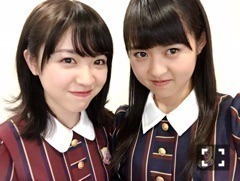
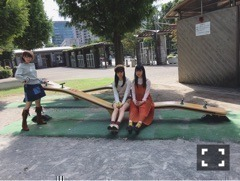
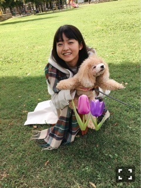

| 2016/11 26 Sat | エレガンス論。751回目 |
紅白、二年連続出場決定致しました！
忘れられないあの空間を
もう一度味わえるとは、
とても有難いことです。噛み締めます。
やっと16th握手会スタートしました。
ミニライブ大盛り上がりだった〜〜
会場も広く、端から端まで、、
最初のアンダーライブも幕張だったなあ、
と思い出すと、すごすぎる光景。
もっとパフォーマンスしたかった〜
そうじゃないと勿体無いくらいの光景でした。
寒い中朝から並んで来てくださって
本当にありがとうございました。

みり愛∠( 'ω')／髪切ったかわいい
舞台期間から現在
前髪がぱつんとなってるよ、
今はこれで落ち着いちゃったー
そんな気分ですよ

昨日は眉毛見えてた
緑と紫に包まれると落ち着く習性
乃木坂46×週刊プレイボーイ2016

井上、中元と公園。
トイカメラで撮る。
珍しくほんわかしてたなあ！
また暴れたいねー
他、内容盛りだくさんだよー
買いましょうね、みなさん


ふわふわぬーいー！！！
おっぴろげだったからお花で隠した！
はあ、かわいいな！！！！！、
まりか
コメント(752)
2016/11/26 18:40